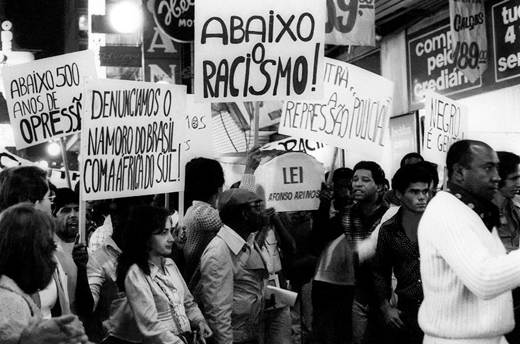
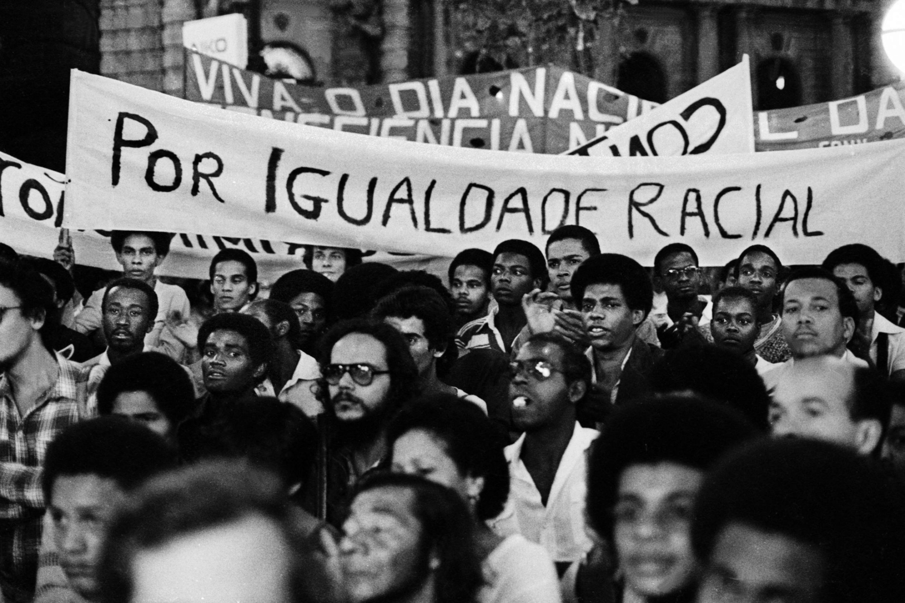
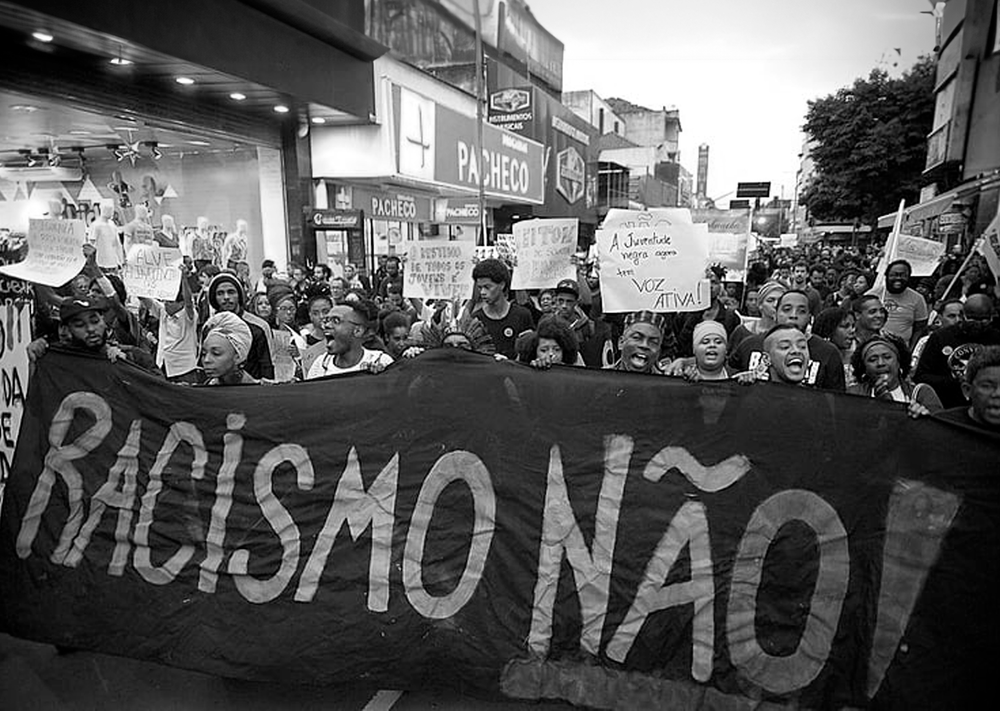
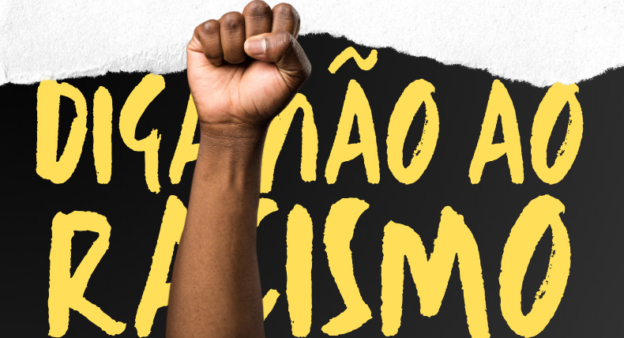
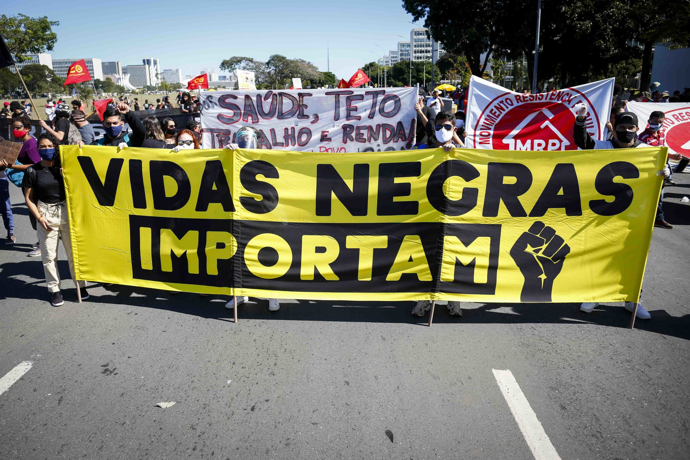

Bento Gonçalves foi um militar, fazendeiro, proprietário de escravizados, deputado provincial e líder revolucionário da Revolução Farroupilha. Bento Gonçalves nasceu em uma rica família dona de estâncias de criação de gado no Rio Grande do Sul. Ainda jovem alistou-se na Companhia de Ordenanças e atuou como militar em alguns conflitos na região da fronteira do Sul do Brasil. Seu desempenho levou-o ao cargo de Coronel e também de comandante da Guarda Nacional do Rio Grande do Sul.




